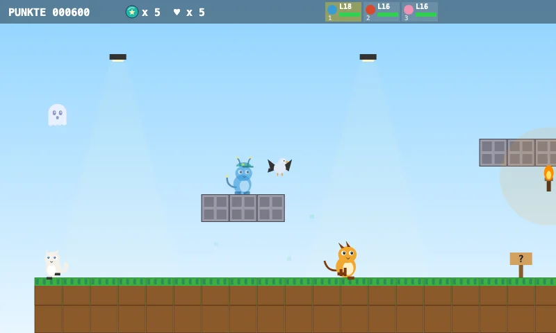
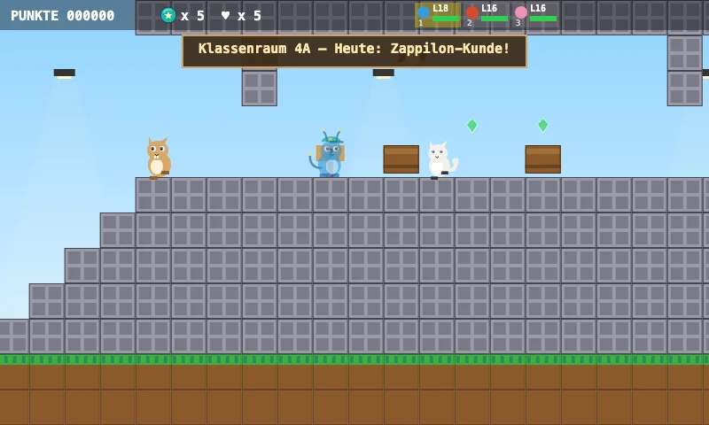
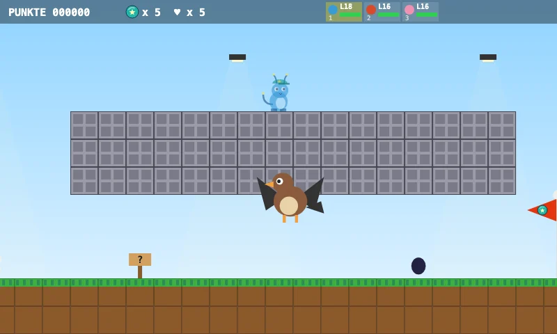
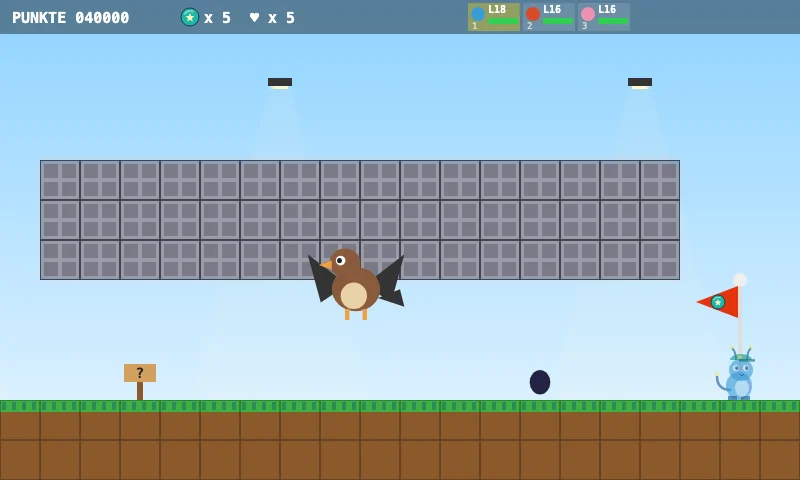

Zappilon adventure
Zappi School
Welcome to the Zappi School!
Collect test tubes and pencils in the classrooms.
Classroom 4A is upstairs – watch out for the thumbtacks!
The headmaster is waiting for you in the gym.
Five looks inside the level

The world
Welcome to the Zappi School!

Objective
Collect test tubes and pencils in the classrooms.

Special feature
Classroom 4A – Today: Zappilon Studies!

Boss
Headmaster Owlector — Owlector is Psychic and Flying – Electric moves work great!

The final stretch
Gym: Time for the big exam!
Uncover secrets, take on special challenges, and find your way to the goal.